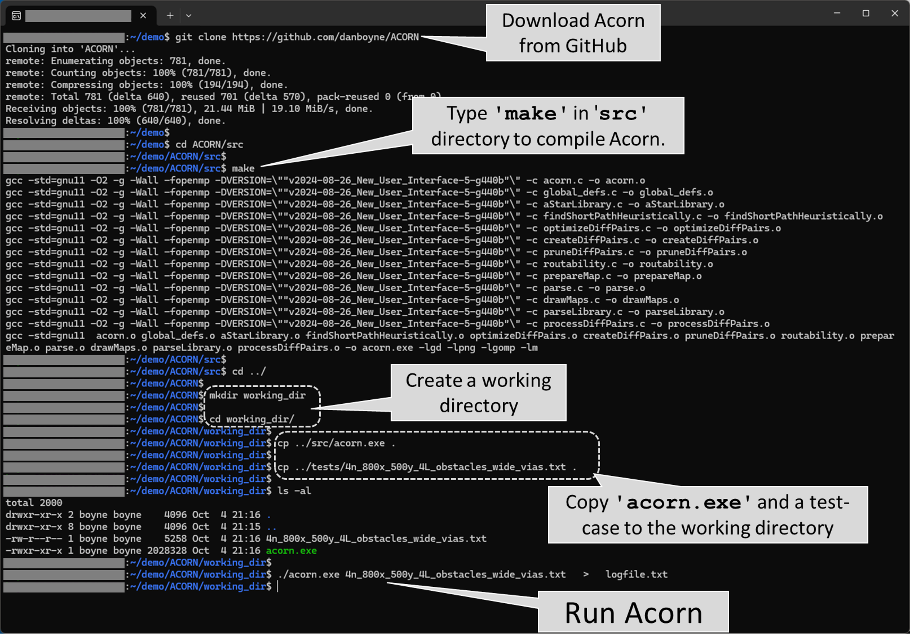

Table of Contents

| Home | User Guide | Examples | Download
(from GitHub) |
How It Works |
Table of Contents |
|
|
Acorn was developed and tested in a Linux environment, and requires the user
to download and then compile the C source code into the Acorn executable file,
acorn.exe. In the directory that contains the
makefile,
.c, and
.h files, type the following command from a
command-line: $ make For the make command to
work, your system must have the GNU Compiler Collection,
gcc, and the GNU Make software. The compiler must also have access to the following
four libraries: Math (which is included in GCC), OpenMP
(also included in GCC), LibPng, and the
GD Graphics Library. The latter two libraries can be
installed on Red Hat-based Linux distributions using the following commands: $ yum -y install libpng-devel $ yum -y install gd-devel Once you've compiled Acorn into the acorn.exe executable, copy this file to a working directory and launch Acorn from the command-line using the following command: $ acorn.exe
<input file> > logfile.txt The <input file>
is a text file that describes the silicon chip, package, and/or PCB, in addition to the locations
of the start- and end-terminals of each net. There are hundreds of examples of such input files
in the tests subdirectory. To get started, try
a small example such as
4n_800x_500y_4L_obstacles_wide_vias.txt. In other words, copy this text file to the
working directory that contains acorn.exe,
and type the following command: $ acorn.exe
4n_800x_500y_4L_obstacles_wide_vias.txt >
logfile.txt Depending on how fast your computer is, and how many cores it contains, the program should take a few minutes to complete. (30 seconds with 16 threads is typical.) As it's running, you can monitor two output files: the logfile.txt file (using the Linux less program, for example) and the routingStatus.html file using your favorite web browser. The latter file will be created in the working directory from which you launched Acorn. As a reminder, you can open this file from a browser using CTL-o (or CMD-o on Macs) and navigating to the working directory to open routingStatus.html. Scroll down to the bottom of the web page to access the final iteration, which is listed just before the message 'Program completed successfully'. Click the hyperlink of the final iteration to view the routing of the 4 nets through the 4 layers of routing (layers M1, M2, M3, and M4), which include routing obstacles shapes as triangles and rectangles. Incidentally, if you'd like Acorn to use fewer threads than
are available on your system, you can use the -t
switch to specify the number of threads. For example, if you'd like Acorn to use only 2 threads,
invoke Acorn like so: $ acorn.exe -t 2 4n_800x_500y_4L_obstacles_wide_vias.txt > logfile.txt |
 |
|
As noted above in the Installation section, Acorn
is launched from a Linux command-line with a text file as an argument. The
STDOUT output of this command should be redirected
to a log file for potential analysis during/after the Acorn run. For example, fatal errors will result
in descriptive error messages at the bottom of this log file. The input text file describes the silicon chip, package, and/or PCB, in addition to the locations of the start- and end-terminals of each net. Instructions for creating such input files are provided below in the Creating Your Own Routing Cases section. But to demonstrate the output of Acorn, let's first use one of the existing input files from the tests directory: 8n_800x_500y_4L_obstacles_diffPairs_PNswappable_costZones_designRuleZones. This small test-case contains 8 nets consisting of 4 differential pairs. As shown in the perspective view at right, there are 4 routing layers and 3 intervening via layers. As shown, there are various obstacles of various shapes and sizes. After copying this file to an empty working directory, we launch this test-case using the following command, directing the STDOUT output to file logfile.txt. $ acorn.exe
8n_800x_500y_4L_obstacles_diffPairs_PNswappable_costZones_designRuleZones >
logfile.txt Within moments, the new file routingStatus.html will be available in the working directory. Open this file using your favorite web-browser to display Acorn's output, which should look like the image below. (Click on the image below to open a live version in a new browser tab.) |
|
After each iteration, Acorn updates the output page above. For example, after the fourth iteration, the same page will appear as shown below. (Click on the image to open a live version in a new browser tab.)
|
When Acorn completes the routing, the above page will be updated to reflect the completed status, as shown below. (Click on the image below to open a live version in a new browser tab.)
|
Explanation goes here.
Explanation goes here.
Explanation goes here.
Explanation goes here.
Explanation goes here.
Explanation goes here.
Explanation goes here.
Explanation goes here.